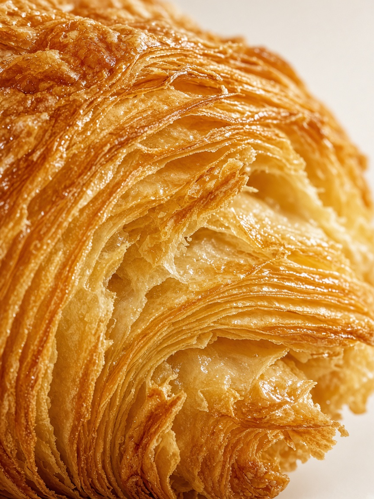
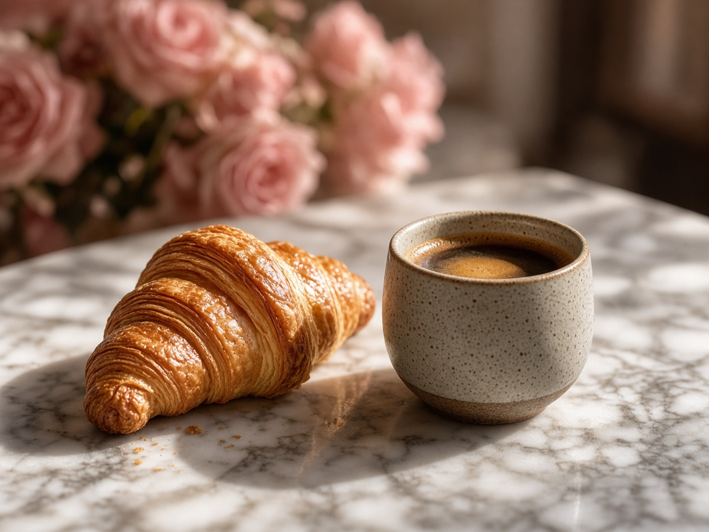

İmza kruvasan
İmza Kruvasan Nasıl Yapılır?
Kat kat dokusunu koruyan, hacimli ve dengeli hamur tekniğinin püf noktaları.
Devamını OkuBlog & Rehber

İmza kruvasan
Kat kat dokusunu koruyan, hacimli ve dengeli hamur tekniğinin püf noktaları.
Devamını Oku
Kahve eşleşmesi
Damak zevkine uygun en doğru kahve ve kruvasan uyumunu keşfedin.
Devamını Oku